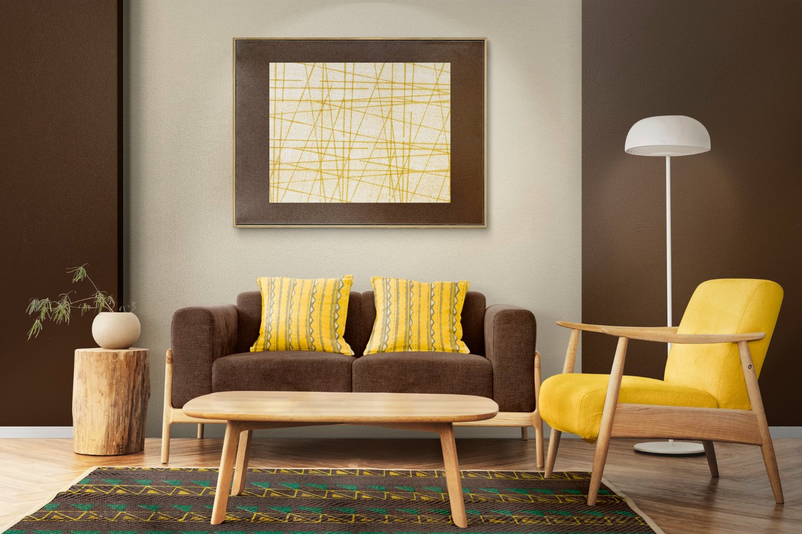

>Ideas New home decor
Combining brown and yellow is one of the most beautiful furniture choices, because it combines warmth and energy at the same time. Brown is a classic and powerful color for furniture, characterized by: A feeling of warmth and comfort: very suitable for living rooms. Steadfastness and elegance: doesn't go out of style easily. Highly practical: doesn't show dirt quickly. A connection to nature: especially when paired with wood. Yellow is a cheerful and bold color, used to add life to a space. It adds energy and vibrancy to the space. It breaks the monotony of traditional colors. It attracts attention and becomes a standout piece in the room. Perfect for spaces that need brightening up. 📌 Yellow chairs or sofas: It could be a main piece (a yellow sofa). Or a simple accent (a yellow chair or cushions). Brown sofas are often made of durable materials like leather or heavy fabric. Modern chairs (in any color) are designed to withstand daily use. These colors help maintain their appeal for longer. Brown and yellow furniture combines authenticity and boldness. Brown provides an elegant and warm foundation, while yellow adds a touch of vibrancy and distinction, creating a balanced space that combines comfort and beauty. The comfort of furniture is one of the most important factors to consider when choosing any piece for your home, it's just as important as its aesthetic appeal. In fact, it's considered the foundation that ensures healthy and comfortable long-term use. Furniture comfort means that the piece is designed to properly support the human body, providing a feeling of relaxation without causing any strain or pain, especially when sitting for extended periods. The importance of furniture comfort: Reducing fatigue and strain: Comfortable furniture reduces pressure on the back and neck. Improving posture: It helps maintain correct body position. Increasing productivity: Especially with office chairs. Psychological well-being: Feeling physically comfortable positively affects mood. By Marwa Medhat, On July 1, 2024 ✨

